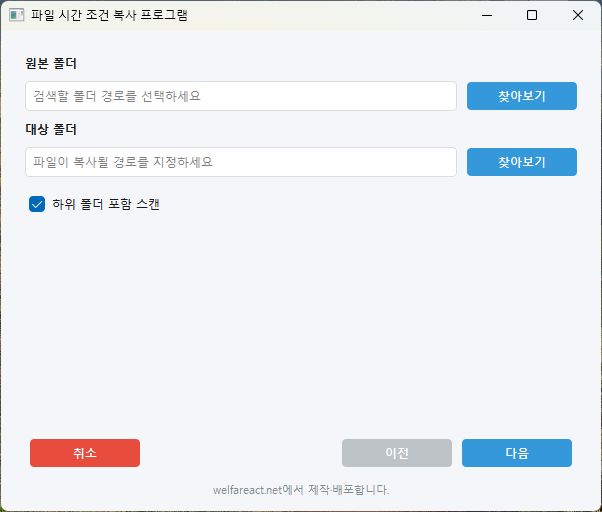
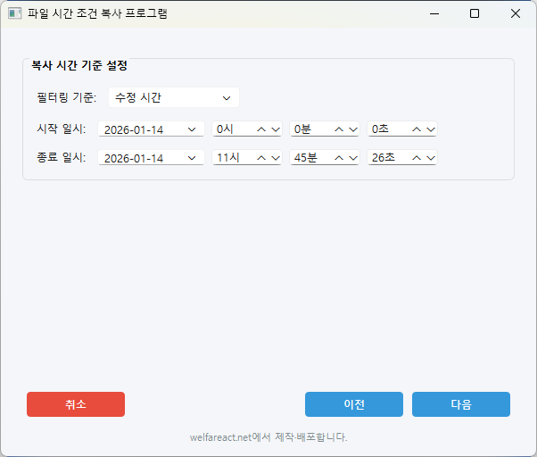

컴퓨터를 옮겨서 작업해야 하는 경우, 바뀐 코드를 일일이 찾아서 복사하는 것은 매우 번거로운 일입니다. 이 프로그램은 파일이 수정된 일시를 기준으로 자동으로 찾아서 복사해주어 업무 효율을 크게 높여줍니다.
📅
시간 기반 필터링
특정 날짜/시간 이후에 수정된 파일만 선택적으로 복사합니다.
🔍
자동 검색
하위 폴더까지 자동으로 검색하여 조건에 맞는 파일을 찾아냅니다.
💾
폴더 구조 유지
원본 폴더 구조를 그대로 유지하면서 복사하여 정리가 쉽습니다.

메인 인터페이스

시간 조건 설정